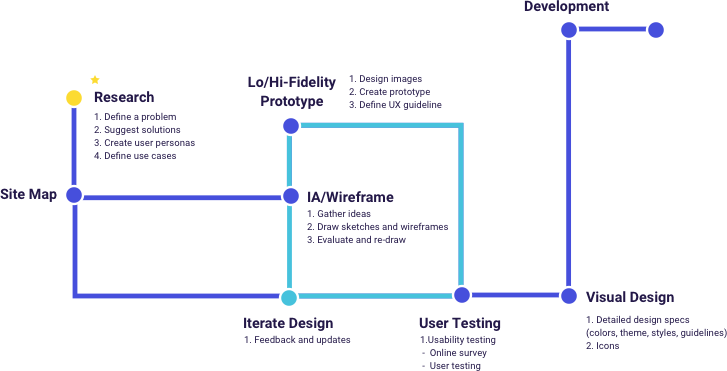

TOOLS

The public transportation is one of the easiest way for travelers to explore new places. This case study provides travelers a new way to explore Bay Area using Bart Transportation. BartOn is a new mobile application leveraging AR(Augmented Reality) technology for travelers. Travelers who planned a day or a week trip can check their trips with new interactive BART map. The map shows 3D perspective view of attractions and user’s tour route. When travelers get to the place, the app shows the information of attractions using AR technology.
BART is a public transportation of San Francisco where runs on bay area and San Francisco downtown. Many tourists visiting city use Bart, but the Bart map is often outdated and difficult to read. Tourists look for a guidance to make their tour plan better but it is difficult to get all the information because there are many different sources. The application can boost the local economy by providing information to tourists and local resident.
The application will leverage AR (Augmented Reality) technology to provide all the information. Users can see the information on the map and mobile application. Tourists make a tour plan on mobile app and get a physical map at the BART station. The app not only shows user’s own tour plan and direction to destination, but also presents attractions visually using 3d simulation.
In the process, I go through different stages repeatedly while evaluating my designs on each stage.

1. Nicole lives in Austraila and she wants to go to the San Francisco for summer vacation. she needs a guidance for the trip.
2. She wants to take a public transportaion for tour. She will find a guide book and get a bart map from information center located in station.
3. She found BartOn app on the map and scan a code to download an app.
4. She makes tour plan using BartOn.
5. She checks her tour route on the map, direction to destination and also information of attractions 3d view.
6. Nicole opens the app to find her destination. It was so easy !!!
7. When she gets on the Golden gate bridge, she wants to know history of bridge. She opens the app, scans the bridge, and the app tells a story of Golden gate bridge.
8. She is satisfied with her first time trip. She doesn’t need to worry about getting lost. She easily finds the information about the places she has visited.
Sicnce this project is for new concept for tourists, I needed to gather information such as new material paper, hologram and AR. I could narrow down the design list to bart map and mobile app.


Here are researches for benefits of wayfinding using 3d floor plan.
"They have tested with small focus-group and below is the short summary 3D floor plans give a good overview of your location. With 3D users see the map the way they see the building in real life. It is possible to show the details, that people use for orientation inside building. It gives a better understanding of where you are and it is easier to link the map with a real building. It is easy to understand which floors have atriums and distinguish between things on different plans. Pathfinding is simple and 3D gives a good visual overview for navigating from one floor to another. It is always possible to use camera view for path visualization."
https://3dwayfinder.com/3d-vs-2d-wayfinding

Energetic (Tourism) + Connected (Transportation)


For BartON promotion, I targeted on the awareness stage where users do not know about our app yet. I focused on introducing our key features and encouraging users to get our new app. The app can be also downloaded by scanning the code on the physical bart map in the BART station. Our target audiences are young, like to travel and eagar to try new things. Social media is the best tool for advertisement. Users can see how app works by simple animation.

I created wireframe based on the key features. First, make the tour plan. Second, users can see 3d hologram on the map view and lastly, when users arrive the destination they get informations using AR camera. I did sketches first and make low-fidelity wireframe. Based on the user testing, Here are final design layout for wireframe.


Citation
https://www.bart.gov/guide
“Bay Area Rapid Transit”, Wikipedia, the free encyclopedia,
https://en.wikipedia.org/wiki/Bay_Area_Rapid_Transit
https://sanfrancisco.cbslocal.com/tag/bart/
Guilherme Stecanella on Unsplash
https://unsplash.com/photos/_dH-oQF9w-Y
“Facebook Mobile Post Mockup (PSD)”
https://unblast.com/facebook-mobile-post-mockup-psd/
{kind=link}